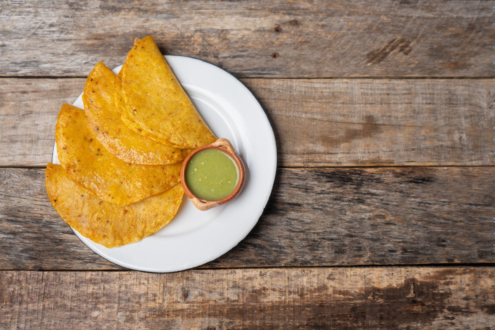
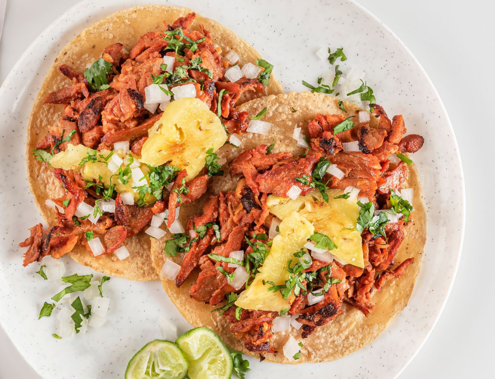
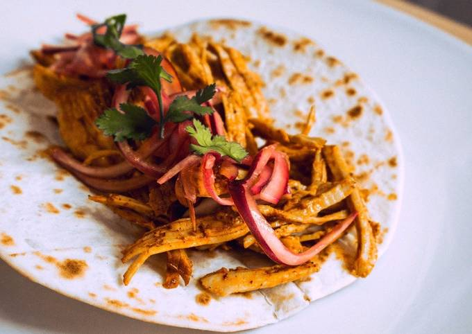
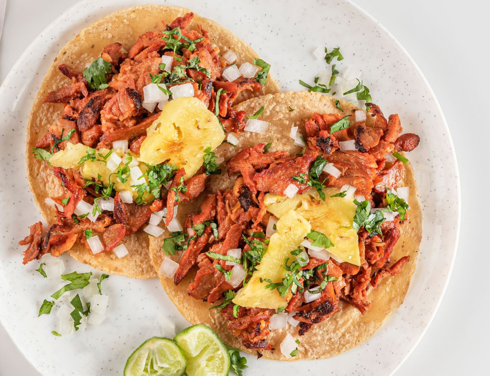
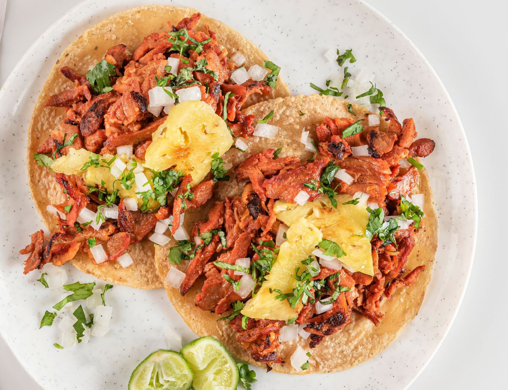
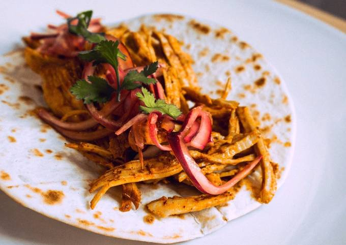
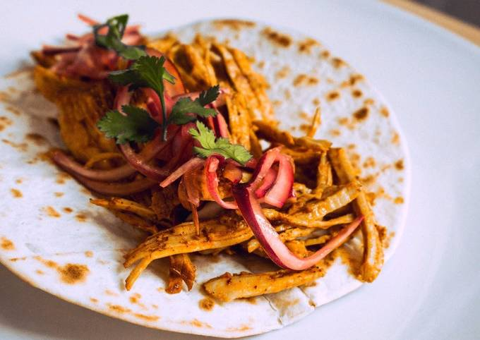

Los tacos árabes son una fusión entre la cocina mexicana y la árabe.
Se elaboran con carne marinada (generalmente cordero)
que se cocina en un trompo similar al al pastor.
Se sirven en tortillas grandes (normalmente harina) y se acompañan con cebolla, cilantro y salsas picantes.
Tacos

tacos de cansta
Los tacos de canasta son ideales para llevar.
Se preparan con tortillas rellenas de diferentes guisos (como frijoles o papa)
que se colocan en una canasta forrada con plástico para mantenerlos calientes.
Suelen servirse con salsa roja o verde y son muy populares por su practicidad.
Tacos

Tacos al Pastor
Los tacos al pastor son conocidos por su sabor ahumado y especiado.
Se preparan con carne de cerdo marinada en achiote y especias,
cocinada en un trompo vertical similar al shawarma.
Se sirven en tortillas de maíz calientes y se acompañan con cebolla picada,
cilantro fresco y piña asada, creando una combinación dulce y salada.
Tacos

Tacos de Cochinita
La cochinita pibil es un plato originario del sureste mexicano.
Para preparar estos tacos,
la carne de cerdo se marina en achiote y jugo de naranja agria antes de cocinarse lentamente en hojas de plátano.
El resultado es una carne tierna que se deshace fácilmente.
Se sirve tradicionalmente con cebolla morada encurtida y salsa habanera.
Sobre Nosotros
En Delicia Rápida, nos apasiona ofrecer comida rápida de alta calidad. Nuestros valores incluyen:

 

 
